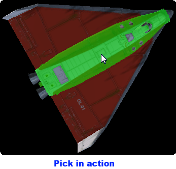
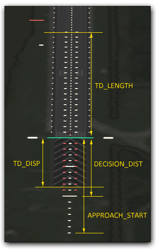

The VulkanClient is the graphics client of the Linux version of Orbiter. It is the D3D9Client of the Windows version, ported to Vulkan, and has the same features, settings and configuration files. This manual is the Linux edition of the D3D9Client documentation.
The VulkanClient renders Orbiter through Orbiter's graphics client interface, like the D3D9Client does on Windows, and adds a number of features to the basic rendering. Here is a brief overview:
The VulkanClient needs a graphics card and driver with Vulkan 1.4 support. The anti-aliasing and anisotropic filtering levels offered in the setup dialog are the ones the selected device supports.
The VulkanClient is part of the Linux version of Orbiter; there is nothing to install separately. Select VulkanClient as graphics engine on the Video tab of the Orbiter Launchpad:
Its files are:
Modules/Plugin/VulkanClient.so: the client
moduleModules/VulkanClient/: shaders, the
configuration file VulkanClient.cfg and the log file
D3D9ClientLog.htmlConfig/GC/: vessel material settings and
atmosphere configurationsConfig/MicroTex.cfg: the surface micro
textures of each celestial bodyCache/VulkanClient/Shaders/: compiled
shaders, if the shader cache is enabled
The Full Screen Mode list on the Video tab offers three modes:
"True Full Screen (no alt-tab)" shows the render window full screen,
"Full Screen Window" opens a window without frame that covers the screen,
and "Window with Taskbar" opens a window without frame that covers the screen
except for the desktop's panels. The names come from the Windows version: on
Linux, switching to other windows works in all three modes, and the display
mode is never changed, so full screen always uses the current resolution of
the screen.
In "True Full Screen" mode, and with "Force window size" ticked, the
anti-aliasing setting of the Advanced Setup dialog is not available.
On the Video tab of the Orbiter Launchpad you find the "Advanced" button that
will show the "VulkanClient Advanced Setup" dialog. Here you can change
several settings to tweak your experience with the VulkanClient. The
settings are stored in Modules/VulkanClient/VulkanClient.cfg.
Here you can change the behavior how the VulkanClient will load surface textures. The two options available are either "Load on demand (recommended)" or "Pre-load at session start":
With this recommended option selected the VulkanClient will only load surface textures when they come into view while you are orbiting a planet. The value in the "Max. load frequency [Hz]" input field lets you tune the maximum frequency the VulkanClient will check whether some new surface textures have come into view.
With this option selected the VulkanClient will load all surface textures at startup of a scenario which results in a longer loading time.
The tile archive selector lets you choose the type and order of planetary
body rendering option.
The planetary body data is located under the
Textures/<Planet> folder and comes in two "flavors".
The Archive sub folder contains compressed data, while the
Elev_mod, Label, Mask and
Surf folders contain the data structures as file system
folders and files.
Access through the archive files is generally faster and should be
preferred over cache access.
The tile archive selection offers three settings:
Here you can change settings according to your graphic hardware:
Depending on your hardware you can select the anti-aliasing feature that will "smoothen" the visual artifacts that occur when displaying edges. The list offers the sample counts your graphics device supports.
Depending on your hardware you can select the level of anisotropic filtering. For further details about this topic take a look at Anisotropic filtering in the wikipedia.
The value set here is a factor that lets you brighten or dim the "shine" produced by the reflection of a planet. The higher the value the more the current orbiting planet acts like a additional light source. The supported value range is from 0.01 to 2.0. The same value can be changed during the simulation as "Indirect Lighting" in the Graphics Controls dialog.
The texture mipmaps selector lets you choose the texture mipmap auto
generation policy. The select box lets you decide how to deal with
missing (not defined) mipmaps at load time.
The texture mipmaps selection offers three settings:
The post processing selector lets you choose whether to add an
additional post processing shader.
Note that enabling post processing will impact framerates.
The post processing selection offers two settings:
The graphic client Graphical User Interface (gcGUI) is an interface that
allows add-ons to add their own user interface elements to a simulation
session. These may be vessel specific controls or general simulation
settings.
Note that this feature is still under development and that the API for
programming it may change.
The gcGUI Mode selection offers these settings:
Selects the atmosphere configuration used for Earth. The list contains
"Default" (Config/GC/Earth.atm.cfg) and the other Earth
configurations found in Config/GC: files whose names end in
_atm.cfg (for example Earth_A_atm.cfg) and
whose Planet entry is Earth. The list shows their
ConfigName entries. Atmosphere parameters are tuned with the
Atmospheric Controls dialog.
Following checkboxes can be checked (enabled) or unchecked (disabled) to further fine-tune your VulkanClient experience:
With this option enabled the VulkanClient
will load all base visuals at startup of a scenario which results in a
longer loading time.
With this option disabled the VulkanClient
will only load base visuals when they come into view while you are e.g.
flying through the atmosphere or orbiting a planet.
With this option enabled the VulkanClient will try to add additional texture information for meshes that supply them. This advanced texture maps define for example how "rough" or "shiny" a texture appears.
With this option enabled the VulkanClient will try to add improved glass shading (Fresnel reflection) for meshes that supply them.
If the near clip-plane compatibility mode is enabled then the minimum
clip-plane distance is 1.0 meters as is in the Orbiters internal engine.
If the compatibility mode is disabled then the client can reduce the clip
distance down to 0.1 meters, if there is a graphics close to the camera.
This setting will only effect in so-called exterior pass. Virtual cockpit
near clip-plane distance is defined in VulkanClient.cfg
(VCNearPlane) and the default value is 0.1 meters.
With this option enabled the VulkanClient will create micro textured cloud surfaces that will make clouds appear much more realistic.
With this option enabled the VulkanClient will render cloud textures as if they were normal-maps. This lets clouds look more "voluminous".
Some older add-ons draw directly onto the simulation window with a device
context (oapiGetDC without a surface; on Windows a GDI
device context, on Linux a QPainter). With this option enabled the
VulkanClient provides an overlay layer for such drawing and blends it
over the rendered scene. Enable it only if an add-on needs it.
By default Orbiter uses incremental animations, meaning
that for each frame the previous animation state is incremented by a small
amount, which will induce some small error.
Over time these errors accumulate and the animation is no longer in the
orientation it's supposed to be (3-10 mins in worst cases).
Absolute animations updates the animation state from a
default state for each frame. Which doesn't suffer from the accumulted
error mentioned before. But absolute animations can fail if an add-on
alters the order of operations (rotations).
Therefore it's not 100% backwards compatible. So far however, no add-on is
known to fail.
With this option enabled the atmospheric scattering of planets is computed with more detail (including the sun colour seen through the atmosphere). This looks better, but costs some frame rate.
The checkboxes below the "Surface micro textures" group are:
With this option enabled the VulkanClient stores its compiled shaders in
Cache/VulkanClient/Shaders in the Orbiter folder and reuses
them at the next start, which shortens the loading time.
With this option enabled the ambient light of vessels is computed from their surroundings (an irradiance map made from the environment map). This needs a Reflection Mode other than "Disable".
With this option enabled the sun is drawn with a glare effect. Its strength can be changed during the simulation in the Graphics Controls dialog.
With the planetary elevation model, some areas of a planet (or moon) might not be perfectly "flat" and make it hard for some vessels to stand upright for example. With the "terrain flattening" feature enabled, the regions defined in .flt files are flattened. For the details on how to set up .flt files, see section Terrain Flattening definitions.
Here you can change settings regarding the rendering of local lights.
In contrast to the global light (the sun) local lights are individual light
sources that might be a flood-light or a special beacon light source in a
fright bay or anywhere else on a vessel.
The number of local lights in a scenario is unlimited.
Each mesh picks the lights which are most relevant to it for rendering.
So, each mesh can have its own set of local lights.
"Partial" lights only compute diffuse part of the lighting while
"Full" lights do specular part too.
The Local lights selection offers these settings:
Here you can change settings that will affect the rendering of shadows that vessels will cast onto themselves or onto other vessel structures.
This will control how many vessels will receive shadowing feature, varying from "None" to "All visible" vessels.
The vessel mapping selection offers four settings:
This will select filtering for shadow maps. "9 Samples" is the fastest
setting for older computers and "27s dither" is the best that is
currently available.
Better filtering produce smoother (better) edges for shadows. The
difference becomes more visible when zooming the camera into a shadow.
The filter options selection offers three settings:
This setting will choose the shadowing mode for planetary surface and
base-objects.
"Stencil" is the legacy mode that's been there for ages.
"Projected" produces more realistic surface shadows for the focused (i.e.
currently active) vessel but doesn't effect any other vessels (all the
other vessels are using Stencil shadows).
In this mode the focus vessel can cast shadows on base objects. This
shadowing option doesn't work well if the vessel is inside a base object.
The terrain mapping selection offers three settings:
Here you can change settings that will affect the rendering of planetary terrains.
This slider allows to adjust the terrain tile resolution level-of-detail (LOD) bias. Higher uses higher resolution tiles, which give a sharper appearance, but can induce flickering. Lower uses lower resolution tiles which look smoother and produce less flickering.
Selects the terrain tile mesh resolution (16 or 32). Higher values will result in smoother appearance, but can affect frame rates on some systems.
Selects 600, 1200 or 2400 tiles. The value is stored in VulkanClient.cfg
(MaxTiles), but the client does not use it in this version.
The Surface mipmaps selection offers two settings:
The SketchPad is used in Orbiter to draw 2D graphics onto surfaces. These are for example MFD Displays or announcements in the Simulation.
The three options you can choose from at "Font rendering" are "Crisp", "Antialiased" and "Cleartype". They define how the fonts are pre-rendered for sketchpad use: Crisp draws fonts without anti-aliasing, the other two with anti-aliasing (on Linux, "Cleartype" is drawn like "Antialiased"). Add-ons can override this for their own fonts. No performance impact.
The generic configuration contains options that will change the general behavior of the VulkanClient. For most of the time the default setup should be fine (Debug Level "1"). But you can for example change the verbosity of the internal logging system to be able to report more detailed issue information when you experience an error or failure.
The five options you can choose from here [0...4] represent the level of
information that will be written into the log-file. The log-file is
called D3D9ClientLog.html which can be found in the
Modules/VulkanClient/ folder. Higher values will create more
detailed output.
Until you have any problems and like to have more detailed information what's going on, you should keep this level reasonably low as higher values will result in more disk I/O what slows down the Simulation.
With this option enabled the VulkanClient provides the "Vulkan Debug Controls" dialog and additional debugging options in its shaders. For further details see the Vulkan Debug Controls Dialog section below. The Launchpad has to be restarted for a change to take effect.
For developers only: with this option enabled the VulkanClient stops the program with a SIGTRAP signal when it logs a warning, so that a debugger stops there. Without a debugger attached, this ends Orbiter at the first warning. Leave it disabled.
The stereoscopic 3D settings (Convergence and Field Depth) are used by the D3D9Client with NVIDIA 3D Vision on Windows. The VulkanClient stores them in VulkanClient.cfg, but they have no effect on Linux.
The reflections and custom camera settings allow you to tweak the parameters that define the behavior of the environment mapping feature. Environment mapping is a feature used to draw reflections of the surrounding environment on reflective surfaces. Custom camera settings will allow add-ons to render images on isolated surfaces (camera screens).
The reflection mode selection offers three settings:
The custom camera interface can be used by add-ons to create e.g.
payload-bay cameras, docking cameras and other things like that.
The camera image rendered by a custom camera can be displayed in an MFD
screen or any other screen in a virtual cockpit or in a panel.
Developer note: see the custom camera functions of the gcCore interface
(gcCoreAPI.h in Orbitersdk/include).
The custom camera selection offers therefore only two settings:
Enabled or Disable.
(Note: This has nothing to do with environment maps; it merely uses the
same code and update mechanism to do the rendering)
Selects the number of environment map faces that will be rendered per frame. The update rate selection offers three settings: Light, Medium or Heavy.
The Surface micro textures settings allow you to tweak the parameters that
define the rendering of additional extra details on (planetary body) surfaces
when viewed from very close. The settings include texture filtering options,
blend modes and
Mipmap settings.
The micro textures for the Moon, Mars, Mercury and several other bodies come
with Orbiter; Config/MicroTex.cfg defines which textures each
body uses.
The Render Mode selection offers two settings:
Selects the texture filtering of the micro textures, from Point (Fast/Good) and Linear (Fast/Bad) to Anisotropic 2x, 4x (Better), 8x and 16x (Slow/Best). Higher anisotropic levels keep the micro textures sharp at low viewing angles, at some cost in frame rate.
Selects how strongly the micro textures modulate the surface texture: Soft light, Normal light or Hard light.
The Mipmap bias slider lets you select the bias level from Sharp to Smooth.
The VulkanClient adds these entries to the Custom functions list
(Ctrl+F4, or the function button of the main menu):
"Vulkan Graphics Controls", "Vulkan Atmospheric Controls" and, with
Enable Development Tools ticked in the Advanced Setup dialog,
"Vulkan Debug Controls".
The Graphics Controls dialog allows you to tweak scene rendering settings while the simulation is running. Right-click a slider to reset it to its default value.
Light glow intensity, Light glow distance and Glow threshold set up the "Light glow" post processing; Gamma adjusts the brightness curve of the image.
Sunlight Intensity sets the brightness of the sun light, Indirect Lighting the light reflected by the planet (the Planet glow setting of the Advanced Setup dialog), Local Lights Max the brightness limit of local lights, and Sun Glare Intensity the strength of the sun glare. The "Recrete Sun/Glares" button creates the sun glare again with the current settings.
The Atmospheric Controls dialog shows the atmospheric scattering parameters of the planet near the camera, and lets you change them while watching the result. The title bar shows the planet, its configuration file and the altitude range (Surface, Low Orbit, High Orbit) whose parameters are shown.
The list at the top selects the page: the atmospheric parameters, or the water and sun-glare parameters. On the atmospheric page, the sliders are grouped into twilight and ambient settings, wavelength and scale height settings, terrain settings, Rayleigh and Mie scattering settings, and custom settings. The Configuration list selects the altitude range to edit ("Auto" follows the camera altitude), and the Copy buttons copy the values shown to the surface, low orbit or high orbit range. Save Settings writes the parameters to the configuration file in use, shown in the title bar (a file in
Config/GC, for example
Earth.atm.cfg); Load Settings reads them back from it.
The Vulkan Debug Controls dialog allows you look at different things while
the simulation is running. It is available when Enable Development
Tools is ticked in the Advanced Setup dialog.
Such things are for example the highlighting of Meshes or Groups, so their
location and look can be easily checked. Looking at a complete scene in
wireframe mode might for example help in finding any mesh parts that are not
placed correct.
The dialog also allows you to change the settings of materials at runtime,
so that changes can be 'seen' while changing them.
The dialog opens with its left column only; the >>> button
shows the right column with further tools, <<< hides it
again.
The mesh debugger group contains elements to inspect a mesh. It gives a mesh
developer some tools at hand to better inspect a mesh in its 'natural
environment', the Orbiter Simulation environment.
With the options available in this group one can for example separate
individual parts of the shown scene and leave out all the rest, so it might
be easier to see what really happens at rendering.
Other settings change the environment so that the current lighting
conditions do not apply, so when the mesh is currently in the shadowed part
of the orbit it can still be seen with some artificial ambient light.
This combo box lets you select what parts of a scene is rendered.
This combo box lets you select the camera-mode. It can be either "Center
on visual" or "Wheel Fly/Pan Cam".
Center on visual will select the 'normal' Orbiter camera
operations where with pressed right mouse button you can 'drag' the
camera around the current selected visual.
Wheel Fly/Pan Cam will select another camera-mode where
with pressed left mouse button you can pan the camera left/right or
up/down and with the right mouse button pressed it can be 'tilted'.
This control lets you change the speed of the camera movements when you are in "Wheel Fly/Pan Cam" camera-mode (see Camera).
This control lets you select one mesh of a multi-mesh vessel by its index. If a vessel consists of a "hull"-mesh and a cockpit-mesh, you will be able to select the two meshes individually by selecting the according mesh index here.
This control lets you select one group out of the current selected mesh (see Mesh Idx) of a multi-group mesh by its index.
With this option enabled the current selected group will be permanently highlighted (green).
With this option enabled the current selected mesh will be permanently highlighted (blue).
With this option enabled the current selected mesh will be lit by artificial ambient light independent of the current 'global' lighting conditions.
Faces are normally only rendered from one side (the "backside" is kind of completely transparent). With this option enabled all faces are rendered opaque from both sides. This helps to find mesh parts that are "sticking out" of another mesh-part.
With this option enabled the scene (or only parts of it, see Display) will be rendered as wireframe model. In a wireframe model only the edges (the lines connecting vertices) of the meshes are drawn.
The Pick option is one of the most useful tools for selecting materials. With this option enabled you can just select a material by clicking onto it with the left mouse button.

The group below the mesh debugger shows the name of the selected mesh. Default Shader selects the shader the mesh is rendered with: PBR (Old) or Metalness PBR. The material properties offered in the Material group depend on this choice.
This group contains all the elements that enable you to tweak the different parameters of the selected material. Its title shows the material's index.
Meaning of the fields will depend about the selected material property. Click a field to select it for the slider.
Copy and paste buttons can be used to copy [RGB] values from different material properties for an example from specular color to reflect color.
The link checkbox allows the link the R, G and B fields and after that they can be adjusted simultaneously with the slider.
Extends the range of the slider for properties that allow values above 1.0.
Marks the selected property as defined for the material, so that it is used and saved with Save materials.
Below the Material group the dialog shows the texture, the mesh and the group status of the selected group.
Once you are happy with the result you have adjusted in the
Material group, click on "Save materials" and
the changed material specifications will be saved in the
Config/GC/ folder of your Orbiter installation, in a file
named after the vessel class (e.g. Config/GC/DeltaGlider.cfg).
You can edit these files with any text editor. The next time you fly a
ship of the same class it will have the properties you have defined.
If you want to have the "default" look back, just remove the according
file from that folder and the standard Orbiter appearance will be restored.
Orbiter comes with such files for some of the standard vessels.
Reloads the textures of the selected vessel from their files, for example after you have edited a texture. Caution: vessels that draw into textures of their own, like the instrument displays of the Delta-glider, can crash Orbiter when their textures are reloaded.
Opens a window with data about the selected object and the picked location.
Loads the VulkanClient's mesh shaders again, for shader development.
With this option enabled the number of frames rendered
per second is limited, to reduce unnecessary GPU and CPU load. The limit
is the FrameRate entry in VulkanClient.cfg (default 200).
The limiter only works with vertical sync disabled; it is recommended to
use the vertical sync option of the Video tab instead.
Client development utility: writes a sampling kernel to Orbiter.log.
Changes the resolution bias of the planetary surface tiles while the simulation runs, to compare levels of detail.
Shows the planetary surface with debugging colours: Normals Global, Normals Tangent, Height, Height Mk2 or Tile Level (None for normal rendering).
Shows one of the client's internal render buffers on the screen, for example the shadow map, the environment map blur levels or the screen depth.
Saves the environment map of the selected vessel as
EnvMap.dds in the Orbiter folder.
Open selects a texture file (DDS, JPG, PNG, HDR, BMP or TGA). Select Action converts it to DXT5, RGB8 or RGB4. Normalize, Reduce seams and Mipmap fade apply corrections, and Noise, Fa and Fb are the parameters of the conversion. Target selects what happens with the result when you press Execute: Save writes it to a DDS file, Assign to slot 0 to 2 uses it as micro texture level 0 to 2 of the planet near the camera, to try out micro textures.
With this option enabled, objects of the scene will have their bounding boxes also drawn.
With this option enabled, objects of the scene will have their bounding spheres drawn. The sphere represents the smallest volume that still fits the complete geometry.
With this option enabled, the bounding boxes of the planetary surface tiles are drawn.
Limit the bounding geometry to the currently selected group, mesh or visual.
Selects a light source of the selected vessel whose light cone is drawn.
The Export textures button has no function in this version.
The VulkanClient allows you to configure some more details when setting up
runway lights.
In addition to the parameters that Orbiter itself defines (see the section
on base configuration files in Doc/Orbiter Developer Manual
(Linux).pdf) there are some extra parameters you can define.
For a better understanding of how some of those parameters affect the
rendering of the runway lights this image might help:

First end point of runway (center line).
Second end point of runway (center line).
Runway width (m)
Note: Two different light configurations exist (wide>59m) and
(narrow<59m)
Precision Approach Path Indicator (PAPI).
Parameters:
Designated approach angle (deg)
Approach cone aperture (deg)
Offset of PAPI location from runway endpoints. (m)
PAPI Mode (int:0-3) (this is optional parameter)
PAPI runway end point (int: 0-1) (if this parameter is not defined then
PAPI is added in both ends)
PAPI Modes:
0: On center line
1: On left side
2: On right side
3 or none: On both sides
PAPI Endpoint:
0: PAPI lights added to END1 only
1: PAPI lights added to END2 only
Not Defined: PAPI lights added in both ends
Note: Runwaylights can have 12 PAPI lights. A runwaylights section can
have more than one PAPI entry.
Visual Approach Slope Indicator (VASI).
Parameters:
Designated approach angle (deg)
Distance between white and red indicator lights (m)
Offset of VASI (red bar) location from runway endpoints (m)
VASI runway end point (int: 0-1) (if not defined then VASI is added in
both ends)
Note: Runwaylights can have 2 VASI lights.
Touch Down displacement (m). (default: 0m)
Displacement between runway endpoint and the green line.
Touch Down displacement for the other end of the runway (m).
(default: 0m)
Displacement between runway endpoint and the green line. If this value
isn't specified then TD_DISP is used for both ends of the runway.
Length of the Touchdown zone (m). (default: 600m)
Two columns of lights on a runway each containing 3 parallel lights.
Length of the "red lights" zone (m). (default: 257m)
This zone contains 2 x 3 x 9 red lights and the spacing between lights
depends on the length of the zone. The touchdown zone uses the same
spacing of about 30m.
Length of the approach lights from the green line (m).
(default: 900m)
It's the long column of 5 parallel lights.
If the singleended keyword is defined then the lights are only rendered when approaching a runway from END1 towards END2. If you want asymmetric runway lights then you need two runwaylight sections in a base configuration file.
Defines the category of runway lights. 1 = SSALR, 2 = ALSF-II. If this value isn't specified then the category is automatically selected based on the runway width. ALSF-II is used if the width is greater than 59m.
Example of runway lights for KSC:
RUNWAYLIGHTS END1 -8220 -3 -600 END2 -12670 -12 -3155 WIDTH 100 PAPI 5.0 3.0 257 3 ; both sides of the green line, in both ends PAPI 20.0 3.0 -2000 0 0 ; on a center line 2km before rwy in END 1 PAPI 20.0 3.0 -2000 3 1 ; both sides of center line, 2km before rwy, in END 2 VASI 1.5 152 671 TD_DISP 257 TD_LENGTH 600 DECISION_DIST 257 APPROACH_START 900 END
Additional texture maps can be automatically assigned to a mesh simply by placing additional textures into a texture folder. Additional textures are identified by an identifier at the end of the texture name, like "dgmk4_1_norm.dds" where "dgmk4_1.dds" is the name of the base texture. As on Windows, the texture file names are looked up without regard to upper and lower case.
A texture set could for example consist of these files:
cube.dds <= 'base' texture
cube_norm.dds <= 'advanced texture Normal-map'
cube_spec.dds <= 'advanced texture Specular-map'
cube_emis.dds <= 'advanced texture Emission-map'
cube_refl.dds <= 'advanced texture Reflection-map'
The maps can be DDS, PNG, JPG, BMP or TGA files, with the same file extension as the base texture.
Available identifiers are:
Tangent space normal map. The [RGB] channels are used.
Specular map controls a specular reflection on a per pixel basis. The [RGB] channels hold the specular color and the alpha channel holds the specular power. Value 255 is mapped to the maximum material defined power and 0 is mapped to 0.0.
Emission map. The [RGB] channels are used, the alpha channel is ignored.
Roughness map controls the surface roughness on a per pixel basis. Only the green channel is used. The Metalness PBR shader reads it as smoothness (1.0 = smooth).
Metalness map. Only the green channel is used. It is used by the advanced shaders only (PBR-ADV and Metalness PBR).
Reflection map controls material reflectivity and color on a per pixel basis. Fresnel reflection works independently from a reflection map. However, a zero (black) reflection map value will mask off the fresnel reflections as well. A non zero value will apply full fresnel reflections for that pixel. Only [RGB] channels from a texture are used.
Translucence map controls the material translucency on a per pixel basis.
The texture behaves much like a diffuse texture, except that it is
illuminated from behind. Illumination is based on the angle of the sun
relative to the surface; if the sun is directly behind the surface, the
illumination is strong, and if the sun is at a low angle but still behind
the surface, the illumination is dim. If the sun begins to illuminate the
surface from in front, the translucence effect is no longer visible.
Only [RGB] channels from a texture are used. It is used by the advanced
shaders only.
Transmittance map controls the amount of light that passes through a
translucent material without being diffused. The effect is very similar
to a specular reflection, except that it simulates the bright spot on a
semi-transparent material that is directly between the sun and the
observer.
The [RGBA] channels from a texture are used. The RGB channels provide
color and brightness, while the alpha channel changes the size of the
bright spot. This is analogous to how the specular map
is used. It is used by the advanced shaders only.
Heat map. It shapes the heat glow that the Part Temperature value of the material's SpecialFX property produces, for example on a re-entering vessel. Only the green channel is used. It is used by the Metalness PBR shader.
The advanced texture maps are used on vessel and base meshes. Base meshes have no environment map of their own. The planetary surface does not use advanced texture maps.
With the planetary elevation model, some areas of a planet (or moon) might not
be perfectly "flat" and make it hard for some vessels to stand upright for
example.
With the "terrain flattening" feature enabled (the default), one can define
specific regions to be modified.
.flt-files for a planet (or moon) must be placed in a
Flat folder in the body's texture folder:
Textures/<planet>/Flat.
There can be multiple .flt-files in each folder, so different
add-ons can co-exist.
In every .flt-file, one or more of the following line entries are parsed:
ELLIPSE <height> <lng> <lat> <major> <minor> <phi> <falloff> // or RECT <height> <lng> <lat> <length> <width> <phi> <falloff>
Notes:
Example of a .flt-file Textures/Moon/Flat/test.flt
// *** Example Terrain Flattening .flt file *** ELLIPSE -2700 -32.6 +41.5 2500 ELLIPSE -2600 -32.6 +41.5 1700 ELLIPSE -2700 -32.6 +41.5 1500 RECT -2700 -32.6 +41.47 3400 2400 ELLIPSE -2600 -32.55 +41.46 250 ELLIPSE -2600 -32.65 +41.46 250
Another example of a .flt-file Textures/Earth/Flat/Cape1.flt
;; LC11 Ellipse 7 -80.5405960 28.4752030 1000 1000 0 20 ;; LC12 Ellipse 7 -80.5430260 28.4805330 1000 1000 0 20 ;; LC13 Ellipse 7 -80.5454560 28.4857930 1000 1000 0 20 ;; LC14 Ellipse 7 -80.5478960 28.4910830 1000 1000 0 20
...for the Atlas pads on Cape Canaveral (We have good resolution there & it also demonstrates that invalid lines will be treated as comments - although not recommended).
The VulkanClient provides the same client interface (gcCore) as the D3D9Client, so add-ons can use the extra features of the client, such as custom camera views, render targets, extended Sketchpad functions and custom GUI windows. The headers are in the Orbitersdk/include folder:
Examples are in the Orbitersdk/samples folder: DrawOrbits, DX9ExtMFD and GenericCamera. They are built like the other Orbiter samples (see Orbitersdk/doc/BuildingSamples (Linux).pdf).
An API reference in HTML format can be created from the source code with OVP/VulkanClient/doc/createAPI_References.sh in the Orbiter source tree. It needs doxygen and graphviz.